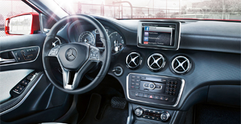
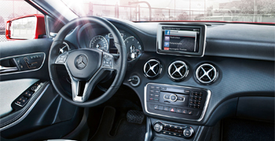

Mercedes-Benz was estabished in 1886 by Kat Benz, Emil elinek, Gettieb Damler, and wilhelm Mayback The first 1Mercedes brand vehices were produced in 1926. In 1932 Max Hotfman utarted importing the Marcedes 3005L Gulwing into the U.S. In 1965, the company founded Mercedes Benz North America.
 


Telecommunications Institute (NTT) was telecommunications systems, technologies, policies and managHinent. NTI as a soentific, training and research institution has the following objectives:The National Telecommunications Institute (NTI) was lounded in 1984 to be a center for telecommutications systems, technologies, policies and management. NTI as a scieritific, training (NTI) was lounded in 1984 to be a center for telecommutications systems, technologies, policies and management. NTI as a scieritific, training and research institution has the following objectives